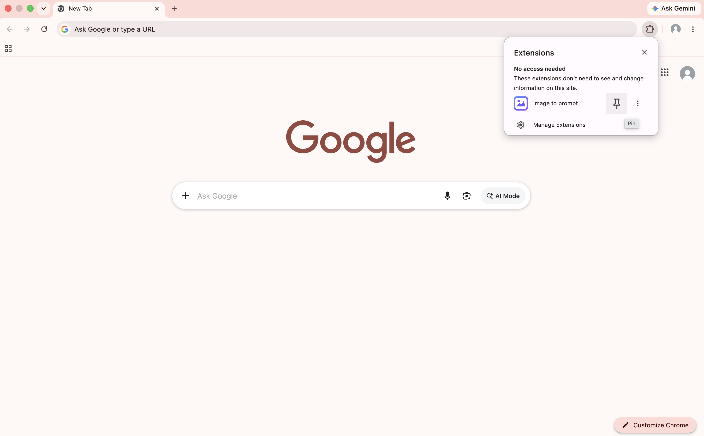
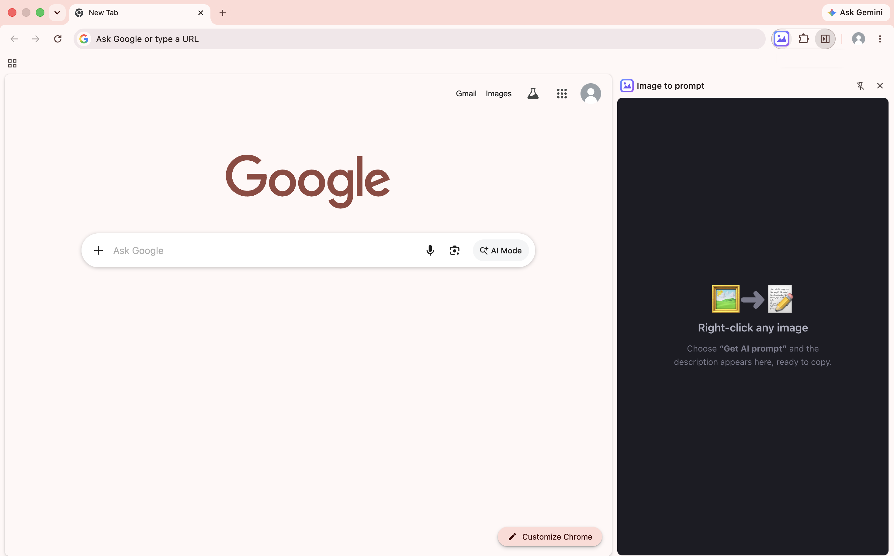

Installed · almost ready
Welcome to Image to prompt
Two quick steps and you're set — just follow the arrows.
1
Pin it to your toolbar

1
2
1
Click the puzzle icon in the toolbar
2
Hit the pin next to “Image to prompt”
2
Click the icon — your panel opens

3
3
Click the pinned icon to open the panel
The framed area is your panel — ready to use